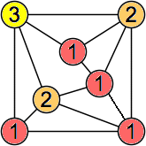

| {1}
|
{1}
| {2}
| {1,2}
|
{1}
| {1,2}
| {3}
| {1,3}
|
{1} (George Sicherman) | {2}
| {1,2}
| {1,3}
| {1,2,3}
| {4}
| {1,4}
|
{1} (George Sicherman) | {1,2}
| {1,3}
| {1,2,3}
| {1,4} (George Sicherman) |
{1,2,4} (George Sicherman) | {1,3,4}
| {1,2,3,4}
| {5}
| {1,5}
|
{2}
| {1,2}
| {3}
| {1,3}
| {1,2,3}  | {1,4}
| {2,4}
| {1,2,4}
| {1,3,4}
|
{2,3,4} (Joe DeVincentis) | {1,2,3,4}
| {1,5}
| {1,2,5} (George Sicherman) | {1,3,5}
| {1,2,3,5}
|
{1,4,5}
| {1,2,4,5}
| {1,3,4,5}
| {1,2,3,4,5}
| {6}
| {1,6}
|
{1,2} (George Sicherman) | {1,3}
| {1,2,3}
| {1,4} (Torsten Ueckerdt) | {1,2,4} (George Sicherman) | {1,3,4}
|
{1,2,3,4}
| {1,5}
| {1,2,5}
| {1,3,5} (Berend van der Zwaag) | {1,2,3,5}
| {1,4,5} (Berend van der Zwaag) | {1,2,4,5}
| {1,3,4,5} (George Sicherman) |
{1,2,3,4,5}
| {1,6} (George Sicherman) | {1,2,6} (Berend van der Zwaag) | {1,3,6}
| {1,2,3,6} (George Sicherman) | {1,4,6} (Joe DeVincentis) | {1,2,4,6} (George Sicherman) |
{1,3,4,6}
| {1,2,3,4,6}
| {1,5,6}
| {1,2,5,6}
| {1,3,5,6} (George Sicherman) | {1,2,3,5,6}
|
{1,4,5,6} (George Sicherman) | {1,2,4,5,6}
| {1,3,4,5,6} (George Sicherman) | {1,2,3,4,5,6}
| {7}
| {1,7}
|
{2} (George Sicherman) | {1,2} (George Sicherman) | {1,3} (Joe DeVincentis) | {2,3}
| {1,2,3}
| {4}
| {1,4}
| {2,4} (George Sicherman) |
{1,2,4}
| {1,3,4}
| {2,3,4}
| {1,2,3,4}
| {1,5} (Joe DeVincentis) | {1,2,5} (George Sicherman) | {1,3,5} (George Sicherman) |
{2,3,5}
| {1,2,3,5}
| {1,4,5} (George Sicherman) | {1,2,4,5}
| {1,3,4,5} (George Sicherman) | {2,3,4,5}
| {1,2,3,4,5}
| {1,6}
| {2,6}
|
{1,2,6}
| {1,3,6} (George Sicherman) | {2,3,6} (Joe DeVincentis) | {1,2,3,6} (George Sicherman) | {1,4,6} (George Sicherman) | {2,4,6}
| {1,2,4,6} (George Sicherman) | {1,3,4,6} (George Sicherman) |
{2,3,4,6} (George Sicherman) | {1,2,3,4,6}
| {1,5,6} (George Sicherman) | {1,2,5,6} (George Sicherman) | {1,3,5,6} (George Sicherman) | {2,3,5,6} (George Sicherman) | {1,2,3,5,6}
| {1,4,5,6} (George Sicherman) |
{1,2,4,5,6} (George Sicherman) | {1,3,4,5,6} (George Sicherman) | {2,3,4,5,6} (George Sicherman) | {1,2,3,4,5,6} (George Sicherman) | {1,7}
| {1,2,7} (George Sicherman) | {1,3,7} (George Sicherman) | {1,2,3,7} (George Sicherman) |
{1,4,7}
| {1,2,4,7}
| {1,3,4,7} (George Sicherman) | {1,2,3,4,7} (George Sicherman) | {1,5,7} (George Sicherman) | {1,2,5,7} (George Sicherman) | {1,3,5,7} (George Sicherman) |
{1,2,3,5,7}
| {1,4,5,7} (George Sicherman) | {1,2,4,5,7} (George Sicherman) | {1,3,4,5,7} (George Sicherman) | {1,2,3,4,5,7} (George Sicherman) | {1,6,7} (George Sicherman) | {1,2,6,7}
| {1,3,6,7} (George Sicherman) |
{1,2,3,6,7} (George Sicherman) | {1,4,6,7} (George Sicherman) | {1,2,4,6,7}
| {1,3,4,6,7} (George Sicherman) | {1,2,3,4,6,7} (George Sicherman) | {1,5,6,7} (George Sicherman) |
{1,2,5,6,7} (George Sicherman) | {1,3,5,6,7} (George Sicherman) | {1,2,3,5,6,7}
| {1,4,5,6,7} (George Sicherman) | {1,2,4,5,6,7} (George Sicherman) | {1,3,4,5,6,7} (George Sicherman) | {1,2,3,4,5,6,7} (George Sicherman) | {8}
| {1,8}
|
If you can extend any of these results, please e-mail me. Click here to go back to Math Magic. Last updated 9/1/19.